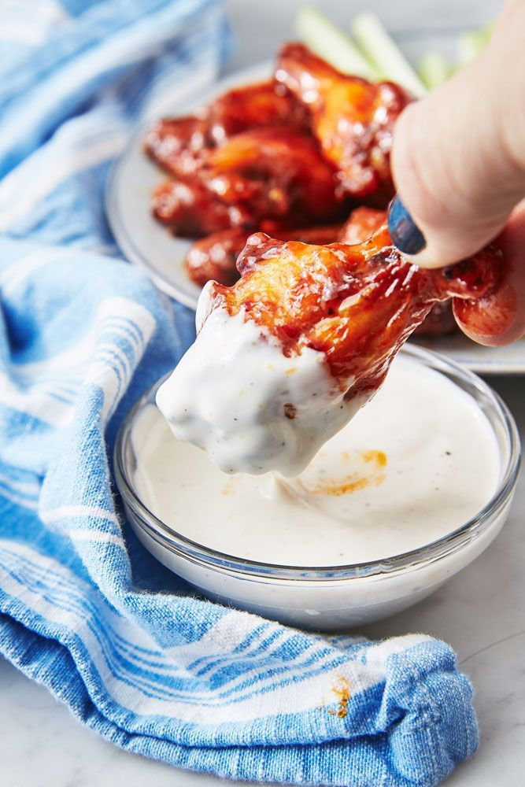

The Best Classic Buffalo Wings

Classic Wing Goodness!
Leave fried wings to the pub. Frying them is messy and involved, and not what you want to be doing when the game is on. Baking the chicken is way easier. Just give yourself plenty of time. Depending on the size of the wings, they'll need between 50 to 60 minutes in the oven before being sauced. Once they're crispy, they get tossed in the buffalo seasoning and go back into the oven, under the broiler, until caramelized.
Follow this recipe for some of the best wings you can make at home!
Ingredients
- 2 lb. chicken wings
- 2 tbsp. Vegetable oil
- 1 tsp. garlic powder
- Kosher salt
- Freshly ground black pepper
- 1/4 c. hot sauce (such as Frank's)
- 2 tbsp. honey
- 4 tbsp. butter
- Dipping sauce of your choice
Directions
- Preheat oven to 400° and place a wire rack over a baking sheet. In a large bowl, toss chicken wings with oil and season with garlic powder, salt, and pepper. Transfer to prepared baking sheet.
- Bake until chicken is golden and skin is crispy, 50 to 60 minutes, flipping the wings halfway through.
- In a small saucepan, whisk together hot sauce and honey. Bring to simmer then stir in butter. Cook until butter is melted and slightly reduced, about 2 minutes. Heat broiler on low. Transfer baked wings to a bowl and toss with buffalo sauce until completely coated. Return wings to rack and broil—watching carefully!—until sauce caramelizes, 3 minutes. Serve with dressing.